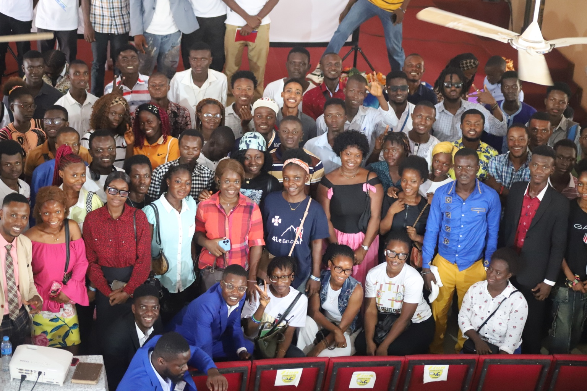

AFRICA YOUTH LEADERSHIP INSTITUTE
Empowering Africa's Next Generation of Leaders
A continental youth leadership institution developing ethical, competent and transformational young leaders through education, leadership development, diplomacy, civic engagement and practical leadership experiences.

AYLI AT A GLANCE
Growing a Continental Leadership Community
From leadership cohorts and national chapters to alumni and leadership initiatives, AYLI is building a growing community of young African leaders.
Leadership cohorts developed through the AYLI Leadership School.
Growing AYLI presence across multiple African countries.
National chapter offices connecting young leaders across Africa.
Participants and alumni contributing to Africa's future.
ABOUT AYLI
Africa's Youth. Africa's Future.
The Africa Youth Leadership Institute (AYLI) is a continental youth leadership institution committed to developing ethical, competent and transformational young leaders across Africa.
AYLI provides young people with opportunities for leadership education, training, mentorship, diplomacy, civic engagement, conferences, retreats and practical leadership experiences.
Discover AYLIOur Vision
To become a leading continental institution for youth leadership development, empowering a generation of ethical and transformational African leaders.
Our Mission
To develop young leaders through education, leadership training, civic engagement, diplomacy and practical leadership experiences.
Our Values
Integrity, excellence, service, responsibility, professionalism, inclusiveness and transformational leadership.
AYLI LEADERSHIP
Leadership With Purpose
AYLI operates through a structured system of executive, academic, administrative, program, student affairs and communications offices, supported by national leadership across its continental network.
EXECUTIVE OFFICE
Office of the Founder & CEO
FOUNDER & CHIEF EXECUTIVE OFFICER
Amb. Christopher N. Touabli Jr.
Provides strategic leadership and direction for the Africa Youth Leadership Institute, advancing its vision, mission and continental leadership development agenda.
Meet the leaders responsible for guiding AYLI's executive, academic, administrative, program and continental operations.
Meet AYLI LeadershipOUR PROGRAMS
Developing Leaders Through Learning
AYLI's programs are designed to strengthen leadership capacity, professional development, civic engagement and continental understanding.
Leadership Education
Building the knowledge and skills required for effective leadership.
Diplomacy & International Relations
Developing understanding of diplomacy, international affairs and global engagement.
Human Rights & Civic Engagement
Encouraging responsible citizenship, human rights awareness and civic participation.
Public Speaking & Critical Thinking
Strengthening communication, confidence, analysis and public leadership.
CURRENT COHORT
AYLI Cohort 12
The AYLI Leadership School continues to develop young leaders through structured academic learning, assessment, presentations and leadership development.
AYLI Leadership School
July 2026
October 03, 2026
CONTINENTAL REACH
Connecting Young Leaders Across Africa
AYLI's national chapters and country leadership structure help bring leadership development, programs and institutional engagement closer to young people across the continent.
The Gambia
Sierra Leone
Ghana
Uganda
Kenya
Tanzania
AYLI ALUMNI
Leadership Beyond Graduation
AYLI's relationship with its participants continues beyond graduation through alumni engagement, networking, leadership opportunities and continental community building.
Explore AlumniNEWS & EVENTS
Stay Connected With AYLI
Follow AYLI announcements, leadership updates, programs, events and stories from across the Institute's growing community.
AYLI News & Announcements
Discover institutional updates, leadership stories and important announcements.
View News →AYLI Events
Explore leadership summits, conferences, webinars, retreats and graduation activities.
View Events →JOIN THE MOVEMENT
Building Africa's Next Generation of Leaders
Explore AYLI's programs, cohorts, chapters and leadership opportunities and become part of a growing continental leadership community.